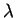
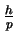
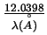
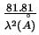
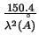

Let us first briefly review modern PDF experiments. As we are trying to
resolve inter-atomic distances to one tenth of an Angstrom resolution,
this sets the relevant wavelength of the probing wave to use. From the
De-Broglie wavelength equation

= 
with of
0.2 Å, the corresponding energy scales are around 60.0 keV for
X-rays (
E = 
(keV)), 2.04 eV for neutrons
(
E = 
(meV)), and 3.76 keV for electrons
(
E = 
(eV)). Electrons have seldom been the
choice for bulk studies due to their short penetration depth (strong
scattering). High energy X-rays and neutrons have much better
penetrating power suitable for bulk studies, which also means their
interactions with matter are rather weak. Thus most quantitative
experiments need to be performed at either high flux synchrotron
source or intense neutron spallation sources, and they are slow
because of the weak interactions. X-rays and neutrons are
complementary probes for PDF studies, providing different contrasts
for the different elemental species in the structure. For example,
X-rays are scattered by the electrons, thus heavy atoms with more
electrons are better ``seen'' by X-rays [5].
Subsections
Xiangyun Qiu
2005-02-18